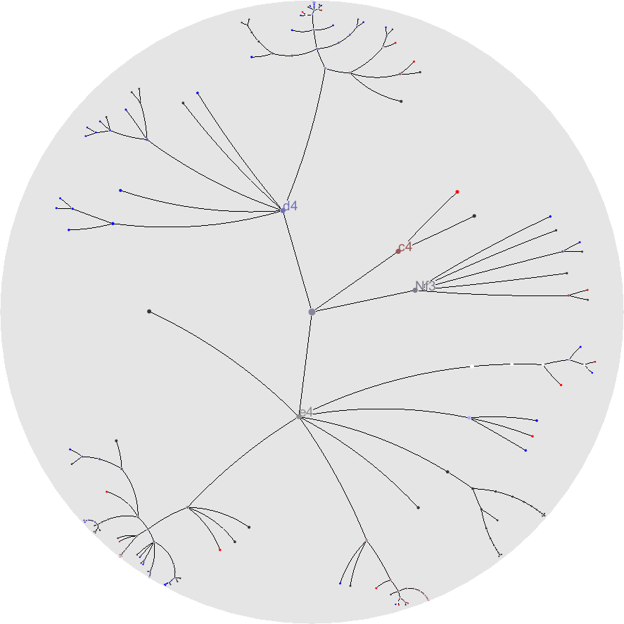
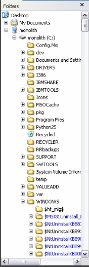
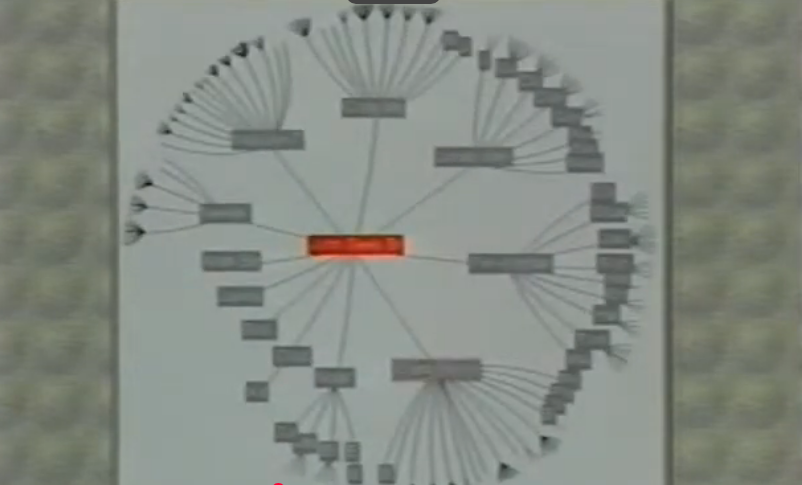
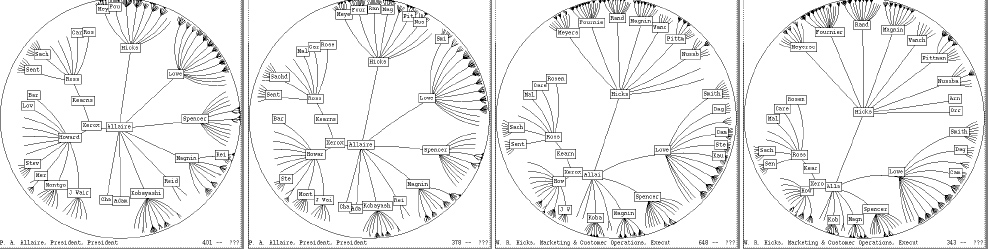
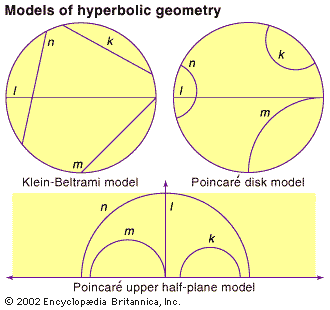
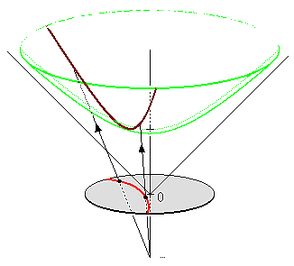

Hyperbolic Tree Visualizations
Utilizing hyperbolic geometry to visualize tree structures and relationships in human-readable formats.
Reese Fairchild
UW MATH 445 - 26Sp
Accessible at: https://tinyurl.com/445rfair

Utilizing hyperbolic geometry to visualize tree structures and relationships in human-readable formats.
Reese Fairchild
UW MATH 445 - 26Sp
Accessible at: https://tinyurl.com/445rfair
Trees are acylic graphs that are everywhere in computer science: file systems, ontologies, parse trees, knowledge graphs. But visualizing large trees in the familiar Euclidean plane runs into an obstacle: trees grow exponentially, while Euclidean space grows only linearly.
A balanced binary tree of depth $d$ has $2^{d+1} - 1$ nodes. The number of leaves alone doubles with each new level. On a flat screen, the horizontal space available to each leaf halves at every level and the layout becomes unreadable before the tree is very deep.
This exponential-polynomial mismatch is the central motivation for using hyperbolic geometry: the hyperbolic plane grows exponentially with radius, better matching the growth rate of a tree and guaranteeing each subtree its own slice of space. (Wikipedia, n.d.)
One important difference between Euclidean and hyperbolic geometry, for our purposes, is how much area is enclosed within a circle of radius $r$. In the Euclidean plane, this is the familiar $A = \pi r^2$, which is polynomial growth. In the hyperbolic plane, it is:
$$ A = 4\pi \sinh^2\!\left(\tfrac{r}{2}\right)\approx \pi e^r $$
This grows exponentially in $r$ - matching how the number of nodes in a tree grows with depth (Wikipedia, n.d.). The two panels below compare the two planes directly: the Euclidean disk grows gently, while the Poincaré disk representation packs exponentially more space near its boundary.
Of course, even with out more efficent use of space, a static image can't capture the full experience of navigating a hyperbolic tree. The true power of this geometry is revealed when we can interactively explore the structure, zooming into subtrees and panning across the disk without losing context. Let us consider a concrete example: visualizing file systems.

An example of a modern, common file tree visualization (Heer, 2026). This common view conveys a tree through indentation and lines, but it doesn't scale well. As the tree grows, it quickly becomes unwieldy and difficult to navigate.

The historic hyperbolic tree browser, which can be used to model file systems (Lamping & Rao, 1996). The system was first patented in 1996 by Xerox, but the original patent has since expired and the technique is now widely used in various forms. (Wikipedia, n.d.)

A multi-view of Lamping and Rao's hyperbolic tree browser (Infovis Wiki, n.d.). This visualization shows the same file system from multiple perspectives, highlighting the unique properties of hyperbolic geometry.
Now, we consider a modern implementation of these file visualization systems. In these interactive visualizations of a tree systems, you can see how the interactive Poincaré disk allows us to maintain a clear view of the tree's structure even as we navigate through its growing branches. (These models actually take some liberties with the strict mathematical definitions to prioritize usability and visual appeal. Later, we will see more accurate implementations.)
Navigation in the Poincaré disk is not performed with ordinary Euclidean translations. Moving a subtree toward the center must preserve the hyperbolic metric and keep geodesics orthogonal to the disk boundary. The correct transformations are therefore Möbius transformations!
Given a point \( a \in \mathbb{D} \), the Möbius transformation that moves \( a \) to the origin is
\[\frac{z - a}{ - \overline{a} z + 1}\]
This transformation preserves angles and maps the unit disk to itself. Most importantly, it preserves hyperbolic distance, making it an isometry of the hyperbolic plane (Miller et al., 2022).
In the interactive visualization, clicking a node applies exactly this transformation to the entire tree. The selected node is translated toward the center of the disk while the surrounding geometry continuously deforms around it. Although the picture appears to stretch near the boundary, hyperbolic distances remain unchanged.
This is one of the central advantages of hyperbolic visualization: any subtree can be brought into focus without losing the global structure of the graph. The center provides local detail, while the boundary retains contextual information about the rest of the tree.
Now, we begin to consider some alternative (but less common) models of hyperbolic geometry.
The Klein disk is another representation of hyperbolic geometry.
Unlike the Poincaré disk, geodesics appear as straight Euclidean
line segments instead of circular arcs.
This makes the model useful for geometric computation and routing, since shortest paths become visually linear. However, angles are distorted, so the model is not conformal (Taimina & Henderson, 2025).
Straight-line geodesics
Angles are distorted near the boundary
Less natural movement transformations
Not commonly used for interactive visualization, making it less familiar to users

A point in the Poincaré disk \((x,y)\) can be transformed into Klein disk coordinates using (Wikipedia, n.d.):
The hyperboloid model embeds the hyperbolic plane directly into three-dimensional Minkowski space. It is a the upper sheet of the surface defined by \[x^2 + y^2 - z^2 = -1\] Geodesics are the intersections of the hyperboloid with planes through the origin (Wikipedia, n.d.).
3D embedding
No distortion on edges
Requires a 3D ambient space
Less intuitive to render on a flat screen
Harder to implement interactively

A Poincaré disk point \((x, y)\) lifts to the hyperboloid via:
The same file-system tree rendered in all three models and the upper half plane. Drag to pan, scroll to zoom, click any node to focus it.
In general, with this example, you can see why the Poincaré disk is often preferred for interactive visualization. The Klein disk's straight-line geodesics are visually appealing, but the angle distortion and less intuitive navigation make it less user-friendly. The hyperboloid model is elegant and free of edge distortion, but its 3D embedding can be difficult to render effectively on a 2D screen and may require more complex interactions to navigate.
All models below represent the same hyperbolic plane $\mathbb{H}^2$. Each takes a Poincaré disk point $z = x + iy \in \mathbb{D}$, with Euclidean radius $r = |z|$ and hyperbolic radius $R = 2\,\mathrm{arctanh}(r)$, as input.
| Model | Projection analogue | Defining property | Geodesics | Conformal (angle-preserving) |
Area Does Not Appear Distorted | Map from Poincaré $z \in \mathbb{D}$ |
|---|---|---|---|---|---|---|
| Poincaré disk | Stereographic | Conformal; perspective from boundary point $(0,0,-1)$ of hyperboloid | Circular arcs orthogonal to disk | Yes | No | $z \mapsto z$ |
| Beltrami–Klein disk | Gnomonic | Geodesics are straight chords; perspective from centre of hyperboloid | Euclidean line segments | No | No | $z \mapsto \dfrac{2z}{1+|z|^2}$ |
| Upper half-plane | Mercator | Conformal; Cayley map sends unit circle to the real axis | Vertical lines and semicircles centred on $\mathbb{R}$ | Yes | No | $z \;\mapsto\; w = i\,\dfrac{1+z}{1-z}$ |
| Hyperboloid (Minkowski) |
- | Embedding in 3D space where areas that appear equal are Euclidean equal | Intersections of $X^2\!+\!Y^2\!-\!Z^2\!=\!-1$ with planes through origin | Yes | Yes | $z \;\mapsto\; \dfrac{1}{1-|z|^2}\!\begin{pmatrix}2x \\ 2y \\ 1+|z|^2\end{pmatrix}$ |
(Miller, 2022; Wikipedia, n.d.; Infovis Wiki, n.d.)
Of course, other models exist and may be more suitable for specific applications, such as the Gans model or the Lambert azimuthal equal-area model.
Visualizing deeply nested directory structures (Lamping & Rao, 1996)
Visualizing high-dimensional data with hyperbolic projections (Walter & Ritter, 2002)
Representing biological networks and hierarchies (Sharpee, 2022)
Hyperbolic embeddings for hierarchical data representation (Nickel & Kiela, 2017)
The hyperbolic models allow for efficient visualization of hierarchical data structures by reducing visual clutter. Utilizing interactive features such as zooming and panning, users can explore complex datasets while maintaining a clear view of the overall structure.
Final course project for UW MATH 445: Intro to Geometries II (Prof. Zhixu Su)
Created by Reese Fairchild
with thanks to Ryan Rozsnyai for his co-development of the website template.